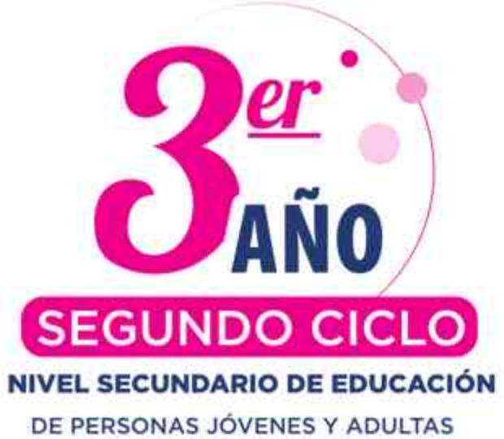

AULA VIRTUAL · MATEMÁTICA
Aprendemos y avanzamos juntos
3.er Año · Segundo Ciclo · Año escolar 2026–2027
Piloto: el formulario no consulta el Registro Maestro ni habilita cuentas.
Matemática · Tercer Año del Segundo Ciclo EPJA · Año escolar 2026–2027.
Orientaciones generales · Antes del Módulo I
Conoce cómo funciona tu aula
Aquí conocerás la ruta anual, las formas de aprender, cómo se evaluarán tus actividades y cómo conservar tus evidencias.
1 · Nuestro programa
Matemática de Tercer Año, Segundo Ciclo EPJA. Año escolar 2026–2027: cuatro períodos y cuatro módulos, con 37 sábados hábiles previstos según el calendario propuesto.
Los módulos se habilitan progresivamente. Puedes recuperar encuentros anteriores sin iniciar sesión.
2 · Cómo aprenderemos
En cada encuentro encontrarás cinco pestañas: ¿Qué sabemos?, Contenidos, Ejemplos, Práctica y Evaluación. Dentro de ellas estudiarás por subtemas, practicarás por destrezas y comprobarás los aprendizajes mediante bloques de competencias. La matemática se trabajará con problemas de la familia, el trabajo y la comunidad.
3 · Cómo seremos evaluados
| Momento | Propósito |
|---|---|
| Inicio | Diagnóstico de saberes previos, sin calificación |
| Durante el módulo | Prácticas formativas y evidencias de trabajo |
| Cierre del módulo | Simulación de práctica por bloques de competencias |
| Valoración docente | Revisión integral de evidencias para el registro oficial |
| Recuperación | Refuerzo de aprendizajes que necesitan mejora |
4 · Competencias, criterios y niveles de desempeño
La evaluación se organiza en cuatro bloques. Cada bloque reúne aspectos específicos de las competencias y sus indicadores de logro; solo se valoran los contenidos efectivamente trabajados.
Comprender, interpretar y expresar ideas matemáticas.
Comparar procedimientos, resolver y justificar soluciones.
Interpretar problemas comunitarios y proponer decisiones.
Aplicar conocimientos y herramientas a problemas diversos.
Progresión pedagógica
Estos cuatro niveles son criterios orientativos de las actividades, no una escala automática ni una declaración de logro oficial. La asociación precisa de CE-MAT4 a CE-MAT7 en los bloques C3 y C4 requiere confirmación por la discrepancia documental detectada.
5 · Tus prácticas y evidencias
Realiza tus actividades, consulta tus resultados y revisa las recomendaciones para seguir mejorando.
Te recomendamos utilizar habitualmente el mismo dispositivo para continuar tu trabajo y conservar tus avances. En Mis registros encontrarás el historial de tus prácticas y la opción de guardar una copia.
Acuerdo de orientación
Mi aula · Aprende a tu ritmo
Aprende a tu ritmo
Aquí encontrarás la clase que corresponde al calendario, tus encuentros y los contenidos que deseas repasar.
Cargando…
Mi ruta de aprendizaje
Consulta los cuatro períodos, el calendario y todos los encuentros disponibles para recuperar o estudiar.
Recuperación de encuentros
Repasa los conocimientos y vuelve a practicar encuentros anteriores a tu ritmo.
Repaso desde el principio
Volver a comenzar el Módulo I
Regresa al Encuentro 1 para repasar las expresiones algebraicas. Tus avances y resultados guardados no se borrarán.
Mi recorrido anual
Cuatro períodos, una sola ruta
Este control solo cambia la vista del calendario; no altera marcas horarias ni resultados guardados.
Libro de Matemática · Módulo I
Recurso de estudio para los encuentros del primer período. Cada encuentro indica sus páginas específicas.
Abrir libro completo (PDF, 24 páginas) ↗Catálogo de contenidos del año
Consulta los temas programados de los cuatro módulos, sus conceptos y procedimientos asociados.
Cierre anual · Después del cuarto módulo
Al finalizar P4 podrás consultar aquí tu balance de simulaciones y los contenidos que necesitas reforzar.
Planificación curricular · 2026–2027
Contenidos de Matemática
29 contenidos agrupados en cuatro módulos. Los códigos organizan la planificación del aula.
Mi período
Todos mis encuentros
Biblioteca de encuentros anteriores
Recuperación de encuentros
Consulta libremente materiales y tareas programadas en encuentros cuya fecha ya pasó. No se presupone que hayas faltado ni se atribuyen pendientes personales.
Mi encuentro
Continúa tu aprendizaje
Aprendamos paso a paso
Abre los cinco pasos en el orden que prefieras. Puedes regresar cuando necesites.
1 · ¿Qué sabemos?
Recuperemos los saberes previos necesarios.
2 · Contenidos
Estudia la explicación y el ejemplo.
3 · Ejemplos
Aplica lo aprendido a una situación del entorno.
4 · Práctica
Realiza tu trabajo autónomo.
5 · Evaluación
Comprueba lo aprendido con una evaluación formativa de este encuentro.
Diagnóstico · Formación · Cierre · Recuperación
Evaluaciones de Matemática
Conoce cómo se organiza cada evaluación y accede a las prácticas disponibles. La práctica final del Módulo I contiene 40 preguntas organizadas en cuatro bloques. Los encuentros 1, 2, 3, 4, 5, 6, 7 y 8 del Módulo II ya disponen de lecciones y evaluaciones formativas interactivas. Los encuentros restantes de P2, P3 y P4 tienen referencias curriculares y lecturas organizadas; sus lecciones y evaluaciones se incorporarán progresivamente.
Momentos de evaluación
Reconocer saberes previos; no se califica.
Practicar, recibir retroalimentación y mejorar.
Comprobar aprendizajes por C1, C2, C3 y C4.
Reforzar aspectos no alcanzados con acompañamiento.
Elegir un período
Práctica formativa de navegación
Comprueba lo aprendido
Pregunta de demostración · C1 · IL-1
Una persona recibe RD$180 por cada servicio que realiza. Si s es el número de servicios, ¿qué expresión representa sus ingresos?
Balance académico · Después del Módulo IV
Cierre anual de Matemática
Este espacio se consolida al finalizar P4. Puedes consultar la estructura desde ahora.
Resumen local de prácticas por bloque y período
| Bloque | P1 | P2 | P3 | P4 |
|---|
Se muestran exclusivamente los resultados de simulaciones que existan en este dispositivo. No se calculan promedios oficiales ni calificaciones de recuperación sin evidencias validadas.
Evidencias y próximas acciones
Las actividades de seguimiento y recuperación se comunicarán en los módulos y por el facilitador.
Registros locales · Evidencias
Mis registros y resultados
Consulta tus intentos de práctica en este navegador, guarda una copia y distingue el registro local de una evidencia recibida o revisada por el facilitador.
Resultados por período
| Bloque | P1 | RP1 |
|---|
Aún no existe una evaluación final del período guardada en este dispositivo.
Intentos locales
Sin calificación oficial
Estado de sincronización
Solo local
No existe recepción en servidor ni revisión docente confirmada.
Historial de intentos
Mi seguimiento
Mis avances y evidencias
Intentos registrados
Almacenados en este navegador
Último resultado
Práctica demostrativa (no oficial)
Historial de intentos
La hora local es informativa. La marca de recepción confiable se generará en el servidor al conectar Google Apps Script.
Envío de evidencias al facilitador
La integración con Google Sheets, Drive y Apps Script se habilitará después de configurar un endpoint seguro y comprobar su recepción.
Modo demostración: los materiales actuales permanecen accesibles sin identidad verificada. El acceso restringido se activará únicamente cuando exista autenticación segura del servidor.